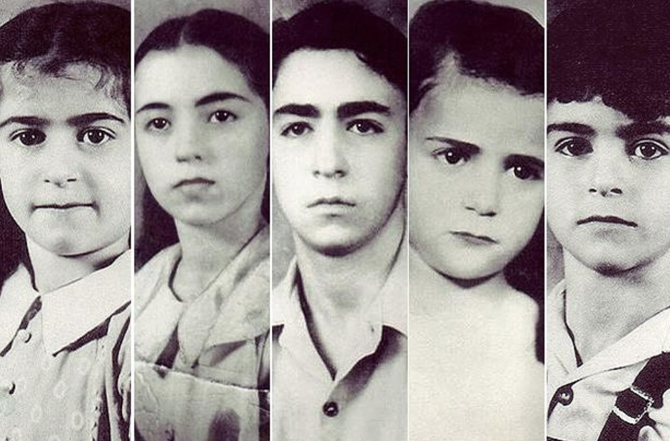

The Daily Case
The Children Who went Up in Smoke
By: Laren Abbott
The Editors of Encyclopaedia Britannica
For nearly four decades, anyone driving down Route 16 near Fayetteville, West Virginia, could see a billboard bearing the grainy images of five children, all dark-haired and solemn-eyed, their names and ages—Maurice, 14; Martha 12; Louis, 9; Jennie, 8; Betty, 5—stenciled beneath, along with speculation about what happened to them. Fayetteville was and is a small town, with a main street that doesn’t run longer than a hundred yards, and rumors always played a larger role in the case than evidence; no one even agreed on whether the children were dead or alive. What everyone knew for certain was this: On the night before Christmas 1945, George and Jennie Sodder and nine of their 10 children went to sleep (one son was away in the Army). Around 1 a.m., a fire broke out. George and Jennie and four of their children escaped, but the other five were never seen again.
George had tried to save them, breaking a window to re-enter the house, slicing a swath of skin from his arm. He could see nothing through the smoke and fire, which had swept through all of the downstairs rooms: living and dining room, kitchen, office, and his and Jennie’s bedroom. He took frantic stock of what he knew: 2-year-old Sylvia, whose crib was in their bedroom, was safe outside, as was 17-year-old Marion and two sons, 23-year-old John and 16-year-old George Jr., who had fled the upstairs bedroom they shared, singeing their hair on the way out. He figured Maurice, Martha, Louis, Jennie and Betty still had to be up there, cowering in two bedrooms on either end of the hallway, separated by a staircase that was now engulfed in flames.
He raced back outside, hoping to reach them through the upstairs windows, but the ladder he always kept propped against the house was strangely missing. An idea struck: He would drive one of his two coal trucks up to the house and climb atop it to reach the windows. But even though they’d functioned perfectly the day before, neither would start now. He ransacked his mind for another option. He tried to scoop water from a rain barrel but found it frozen solid. Five of his children were stuck somewhere inside those great, whipping ropes of smoke. He didn’t notice that his arm was slick with blood, that his voice hurt from screaming their names.
His daughter Marion sprinted to a neighbor’s home to call the Fayetteville Fire Department but couldn’t get any operator response. A neighbor who saw the blaze made a call from a nearby tavern, but again no operator responded. Exasperated, the neighbor drove into town and tracked down Fire Chief F.J. Morris, who initiated Fayetteville’s version of a fire alarm: a “phone tree” system whereby one firefighter phoned another, who phoned another. The fire department was only two and a half miles away but the crew didn’t arrive until 8 a.m., by which point the Sodders’ home had been reduced to a smoking pile of ash.
George and Jeannie assumed that five of their children were dead, but a brief search of the grounds on Christmas Day turned up no trace of remains. Chief Morris suggested that the blaze had been hot enough to completely cremate the bodies. A state police inspector combed the rubble and attributed the fire to faulty wiring. George covered the basement with five feet of dirt, intending to preserve the site as a memorial. The coroner’s office issued five death certificates just before the new year, attributing the causes to “fire or suffocation.”
But the Sodders had begun to wonder if their children were still alive.
George Sodder was born Giorgio Soddu in Tula, Sardinia in 1895, and immigrated to the United States in 1908, when he was 13. An older brother who had accompanied him to Ellis Island immediately returned to Italy, leaving George on his own. He found work on the Pennsylvania railroads, carrying water and supplies to the laborers, and after a few years moved to Smithers, West Virginia. Smart and ambitious, he first worked as a driver and then launched his own trucking company, hauling dirt for construction and later freight and coal. One day he walked into a local store called the Music Box and met the owners’ daughter, Jennie Cipriani, who had come over from Italy when she was 3.
They married and had 10 children between 1923 and 1943, and settled in Fayetteville, West Virginia, an Appalachian town with a small but active Italian immigrant community. The Sodders were, said one county magistrate, “one of the most respected middle-class families around.” George held strong opinions about everything from business to current events and politics, but was, for some reason, reticent to talk about his youth. He never explained what had happened back in Italy to make him want to leave.
The Sodders planted flowers across the space where their house had stood and began to stitch together a series of odd moments leading up to the fire. There was a stranger who appeared at the home a few months earlier, back in the fall, asking about hauling work. He meandered to the back of the house, pointed to two separate fuse boxes, and said, “This is going to cause a fire someday.” Strange, George thought, especially since he had just had the wiring checked by the local power company, which pronounced it in fine condition. Around the same time, another man tried to sell the family life insurance and became irate when George declined. “Your goddamn house is going up in smoke,” he warned, “and your children are going to be destroyed. You are going to be paid for the dirty remarks you have been making about Mussolini.” George was indeed outspoken about his dislike for the Italian dictator, occasionally engaging in heated arguments with other members of Fayetteville’s Italian community, and at the time didn’t take the man’s threats seriously. The older Sodder sons also recalled something peculiar: Just before Christmas, they noticed a man parked along U.S. Highway 21, intently watching the younger kids as they came home from school.
Around 12:30 Christmas morning, after the children had opened a few presents and everyone had gone to sleep, the shrill ring of the telephone broke the quiet. Jennie rushed to answer it. An unfamiliar female voice asked for an unfamiliar name. There was raucous laughter and glasses clinking in the background. Jennie said, “You have the wrong number,” and hung up. Tiptoeing back to bed, she noticed that all of the downstairs lights were still on and the curtains open. The front door was unlocked. She saw Marion asleep on the sofa in the living room and assumed that the other kids were upstairs in bed. She turned out the lights, closed the curtains, locked the door and returned to her room. She had just begun to doze when she heard one sharp, loud bang on the roof, and then a rolling noise. An hour later she was roused once again, this time by heavy smoke curling into her room.
Jennie couldn’t understand how five children could perish in a fire and leave no bones, no flesh, nothing. She conducted a private experiment, burning animal bones—chicken bones, beef joints, pork chop bones—to see if the fire consumed them. Each time she was left with a heap of charred bones. She knew that remnants of various household appliances had been found in the burned-out basement, still identifiable. An employee at a crematorium informed her that bones remain after bodies are burned for two hours at 2,000 degrees. Their house was destroyed in 45 minutes.
The collection of odd moments grew. A telephone repair man told the Sodders that their lines appeared to have been cut, not burned. They realized that if the fire had been electrical—the result of “faulty wiring,” as the official reported stated—then the power would have been dead, so how to explain the lighted downstairs rooms? A witness came forward claiming he saw a man at the fire scene taking a block and tackle used for removing car engines; could he be the reason George’s trucks refused to start? One day, while the family was visiting the site, Sylvia found a hard rubber object in the yard. Jennie recalled hearing the hard thud on the roof, the rolling sound. George concluded it was a napalm “pineapple bomb” of the type used in warfare.
Then came the reports of sightings. A woman claimed to have seen the missing children peering from a passing car while the fire was in progress. A woman operating a tourist stop between Fayetteville and Charleston, some 50 miles west, said she saw the children the morning after the fire. “I served them breakfast,” she told police. “There was a car with Florida license plates at the tourist court, too.” A woman at a Charleston hotel saw the children’s photos in a newspaper and said she had seen four of the five a week after the fire. “The children were accompanied by two women and two men, all of Italian extraction,” she said in a statement. “I do not remember the exact date. However, the entire party did register at the hotel and stayed in a large room with several beds. They registered about midnight. I tried to talk to the children in a friendly manner, but the men appeared hostile and refused to allow me to talk to these children…. One of the men looked at me in a hostile manner; he turned around and began talking rapidly in Italian. Immediately, the whole party stopped talking to me. I sensed that I was being frozen out and so I said nothing more. They left early the next morning.”
Over the next few years the tips and leads continued to come. George saw a newspaper photo of schoolchildren in New York City and was convinced that one of them was his daughter Betty. He drove to Manhattan in search of the child, but her parents refused to speak to him. In August 1949, the Sodders decided to mount a new search at the fire scene and brought in a Washington, D.C. pathologist named Oscar B. Hunter. The excavation was thorough, uncovering several small objects: damaged coins, a partly burned dictionary and several shards of vertebrae.
In 1968, more than 20 years after the fire, Jennie went to get the mail and found an envelope addressed only to her. It was postmarked in Kentucky but had no return address. Inside was a photo of a man in his mid-20s. On its flip side a cryptic handwritten note read: “Louis Sodder. I love brother Frankie. Ilil Boys. A90132 or 35.” She and George couldn’t deny the resemblance to their Louis, who was 9 at the time of the fire. Beyond the obvious similarities—dark curly hair, dark brown eyes—they had the same straight, strong nose, the same upward tilt of the left eyebrow. Once again they hired a private detective and sent him to Kentucky. They never heard from him again.
The youngest and last surviving Sodder child, Sylvia, is now 69, and doesn’t believe her siblings perished in the fire. When time permits, she visits crime sleuthing websites and engages with people still interested in her family’s mystery. Her very first memories are of that night in 1945, when she was 2 years old. She will never forget the sight of her father bleeding or the terrible symphony of everyone’s screams, and she is no closer now to understanding why.